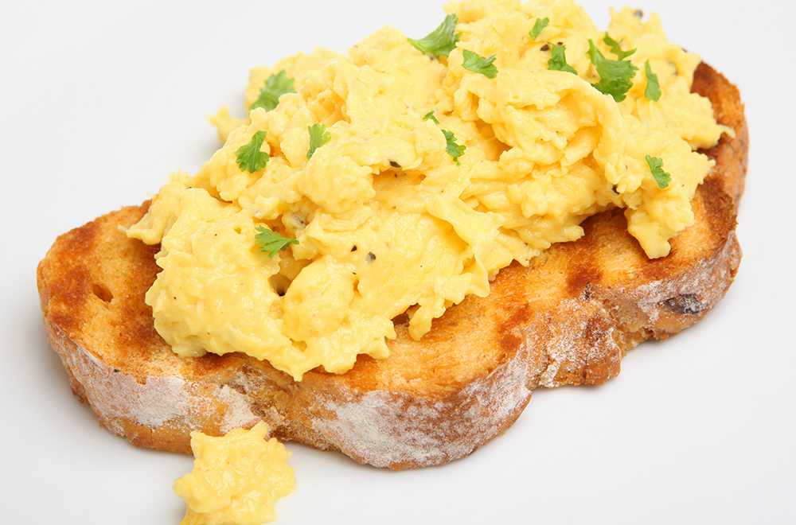
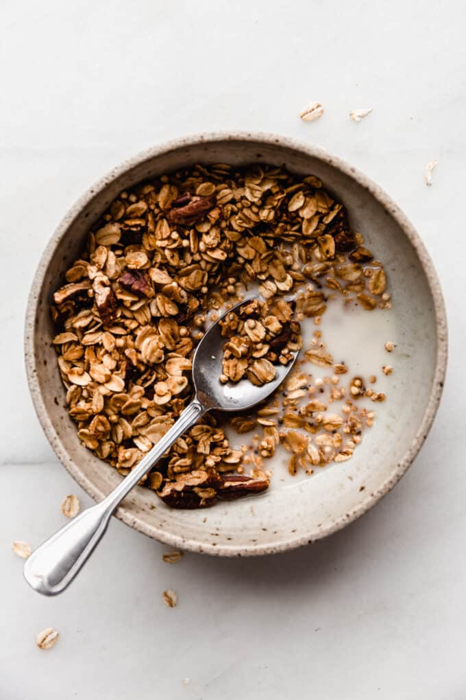

Aprende las bases de la cocina
Cada guía está diseñada para principiantes absolutos. Sin tecnicismos, sin presupuestos altos — solo práctica real desde tu cocina.
 Desayuno
Desayuno
Prepara una avena cremosa y nutritiva combinándola con frutas frescas como banano, fresas o manzana. Aprende a cocinar la avena correctamente, elegir los mejores toppings y crear un desayuno fácil, saludable y perfecto para comenzar el día con energía.

DesayunoDescubre cómo hacer huevos revueltos suaves y esponjosos acompañados de tostadas crujientes y doradas. Aprende técnicas básicas de cocción, control del fuego y formas sencillas de servir un desayuno clásico y delicioso.
 Desayuno
Desayuno
Aprende a preparar un smoothie refrescante y cremoso utilizando mango y banano maduros. Conoce las proporciones ideales, opciones para hacerlo más nutritivo y consejos para obtener una textura suave y llena de sabor.
 Desayuno
Desayuno
Descubre cómo hacer crepes delgados, suaves y perfectos para rellenar con frutas, chocolate o miel. Aprende a mezclar los ingredientes correctamente y a cocinar cada crepe de manera uniforme y fácil, incluso si eres principiante.

DesayunosAprende a preparar granola casera crujiente utilizando avena, frutos secos y miel. Descubre cómo hornearla correctamente, combinar ingredientes al gusto y crear una opción práctica y saludable para desayunos o meriendas.
 Desayunos
Desayunos
Prepara un burrito de desayuno relleno con huevos, queso y otros ingredientes sencillos para una comida completa y fácil de llevar. Aprende a armarlo correctamente, calentar la tortilla y lograr un desayuno rápido y lleno de sabor.